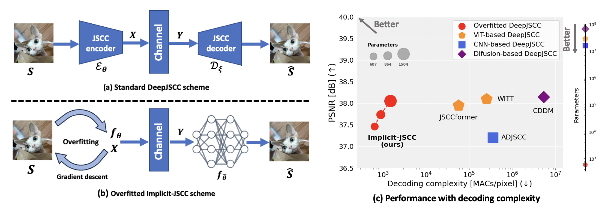

From AE-based DeepJSCC codec to overfitted codec

Fig. 1 Operational paradigm and corresponding performance.
Deep joint source-channel coding (DeepJSCC) offers a promising approach to improving transmission efficiency by jointly leveraging source semantics and channel conditions. While prior work has focused on fidelity under varying channel conditions, recent diffusion-based approaches improve perceptual quality at the cost of high complexity and limited adaptability. In this work, we reveal that fidelity and perceptual realism can be unified in an adaptive DeepJSCC scheme through SNR-aware optimization, eliminating the need for separate models. Specifically, we propose \( \text{W}^2 \)-DeepJSCC, a unified, channel-adaptive framework that dynamically balances fidelity and perceptual realism based on channel conditions. It introduces two key innovations: a saliency-guided perception–fidelity adapter (SG-PFA) and wavelet Wasserstein distortion (WA-WD). SG-PFA enables a single model to adapt across varying channel conditions, preserving semantic realism under poor channel conditions while enhancing fidelity under good ones. WA-WD, inspired by foveal and peripheral vision, provides fine-grained control in the wavelet domain. As a plug-and-play module, \( \text{W}^2 \)-DeepJSCC integrates seamlessly with existing DeepJSCC architectures. Experiments show that \( \text{W}^2 \)-DeepJSCC significantly outperforms baselines in perceptual metrics while maintaining strong fidelity at high SNRs. Prototype verification further highlights its advantages, demonstrating that the proposed method delivers competitive fidelity and perception with low complexity, making it a promising alternative for future deployments. Additionally, a user study further confirms that WA-WD aligns more closely with human perception than existing metrics.
Fig. 1 Operational paradigm and corresponding performance.
Fig. 2 Architecture of Implicit-JSCC. Left: encoding process of the transmitter; Right: decoding process of the receiver.
Fig. 3 Experimental resutls on Kodak dataset.

Fig. 4 Visulization on Kodak dataset.

Fig. 5 Experimental resutls on CLIC2020 dataset.
Fig. 6 Other modality: (a). Audio and (b). MRI data.
Fig. 7 Comparisons on CLIC2020 dataset, SNR=0dB.
@article{ImplicitJSCC,
title={Leveraging Overfitting for Low-Complexity Deep Joint Source-Channel Coding},
author={Haotian Wu, Pier Luigi Dragotti, and Deniz Gündüz},
journal={ArXiv},
year={2025}
}